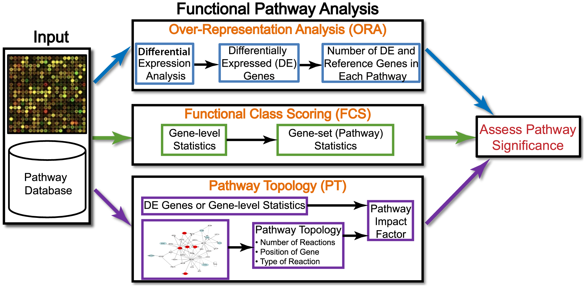

# September 2024
# HBC single-cell RNA-seq DGE workshop
# Single-cell RNA-seq analysis - Functional analysis of pseudobulk resultsFunctional analysis of pseudobulk DE
Approximate time: 40 minutes
Learning Objectives:
- Describe the theory of how functional enrichment tools yield statistically enriched functions or interactions
- Discuss functional analysis using over-representation analysis and functional class scoring
- Run clusterProfiler on significant genes from pseudobulk DE analysis
Functional analysis of pseudobulk differentially expressed genes
When it comes to functional analysis there are various analyses that can be done:
- Determine whether there is enrichment of known biological functions, interactions, or pathways
- Identify genes’ involvement in novel pathways or networks by grouping genes together based on similar trends
- Use global changes in gene expression by visualizing all genes being significantly up- or down-regulated in the context of external interaction data
Generally, for any differential expression analysis, it is useful to interpret the resulting gene lists using freely available web- and R-based tools. While tools for functional analysis span a wide variety of techniques, they can loosely be categorized into three main types: over-representation analysis, functional class scoring, and pathway topology [1].

Image credit: Khatri et al, PloS Computational Biology
In this lesson, we will walk you through both an over-representation analysis and gene set enrichment analysis (GSEA) using an R Bioconductor package called clusterProfiler.
Over-representation analysis
Over-representation analysis (ORA) is used to determine which a priori defined gene sets are more present (over-represented) in a subset of “interesting” genes than what would be expected by chance (Huang et al, 2009). Most genes in the genome have some pre-existing annotation associated with it, which has been compiled through a combination of manual curation and computational algorithms. There are a number of existing databases which define genes using a controlled vocabulary and then categorize genes into groups (gene sets) based on shared function, involvement in a pathway or presence in a specific cellular location, etc. A very commonly used gene annotataion resource is the Gene Ontology (GO) database, and is what we will use in our workflow.
We then use those categorizations to assess whether or not the enrichment observed amongst our DE gene results when compared to the larger universe of genes is significant.

Hypergeometric test
The statistical test that will determine whether something is actually over-represented is the Hypergeometric test.
Hypergeometric distribution is a probability distribution that describes the probability of some number of genes (k) being associated with “Functional category 1”, for all genes in our gene list (n=1000), compared to the number of genes (K) associated with “Functional category 1” from a population of all of the genes in entire genome (N=13,000) [2].
The calculation of probability of k successes follows the formula:
This test will result in a p-value that will be adjusted to consider multiple testing correction for each category tested.
Running ORA with clusterProfiler
Now that we know more about what ORA is doing, let’s take our significant genes and see if there are any GO terms over-represented that align with what we expect to be happening in VSM cells with a change of temperature.
In the workshop so far, we have run differential expression analysis using two different approaches:
- Using
FindMarkers()to treat individual cells as replicates - Aggregating counts from all cells in a sample to run pseudobulk DE
We will take the results from the pseudobulk DE and run different functional analysis methods to obtain some biological insight.
Open up a new R script called functional-analysis.R and create a header indicating what the script will contain.
The first thing we’ll do is load the required libraries:
# Load libraries
library(tidyverse)
library(clusterProfiler)
library(org.Mm.eg.db)
library(msigdbr)Next, we will filter genes to remove any genes that have NA values in the padj column. These are genes that were not tested and so we do not want to consider them in our background set of genes. Once filtered, we create vectors containing our gene symbols for the background and query set of genes. We will query the up- and down-regulated gene sets separately, but note that you can also use the entire significant list as a query input.
# Untested genes have padj = NA, so let's keep genes with padj != NA
dge_deseq2_noNAs <- filter(dge_deseq2, padj != "NA" )
# Create background dataset for hypergeometric testing using all tested genes for significance in the results
all_genes <- as.character(dge_deseq2_noNAs$gene)
# Extract significant results for up-regulated
sigUp <- dplyr::filter(dge_deseq2_noNAs, padj < 0.05, log2FoldChange > 0)
sigUp_genes <- as.character(sigUp$gene)Finally, we can perform the GO enrichment analysis and save the results:
# Run GO enrichment analysis
egoUp <- enrichGO(gene = sigUp_genes,
universe = all_genes,
keyType = "SYMBOL",
OrgDb = org.Mm.eg.db,
ont = "BP",
pAdjustMethod = "BH",
qvalueCutoff = 0.05,
readable = TRUE)
Note
Note 1: The different organisms with annotation databases available to use with for the OrgDb argument can be found here.
{kind=link}
Note 2: The keyType argument may be coded as keytype in different versions of clusterProfiler.
Note 3: The ont argument can accept either “BP” (Biological Process), “MF” (Molecular Function), and “CC” (Cellular Component) subontologies, or “ALL” for all three.
# Output results from GO analysis to a table
cluster_summaryUp <- data.frame(egoUp)
write.csv(cluster_summaryUp, "../results/clusterProfiler_VSM_TNvsCold7_upregulated.csv")
Note
Instead of saving just the results summary from the egoUp object, it might also be beneficial to save the object itself. The save() function enables you to save it as a .rda file, e.g. save(egoUp, file="results/egoUp.rda"). The statistics stored in the object can be used for downstream visualization.
Exploring results from over-representation analysis
Let’s take a look at what terms are identified as over-represented in the genes up-regulated in cold conditions.
View(cluster_summaryUp)In the first few columns we see the GO identifier and the descriptive term name. In the next two columns that follow, we observe GeneRatio and BgRatio. These values allows us to compare the overlaps to the background.
- BgRatio: K/N
- The total number of genes in the GO term gene set (K), divided by the total number of genes in universe (N)
- GeneRatio: k/n
- The total number of genes in our sig DE gene set which overlap with the GO term gene set (k), divided by the total number of genes in our sig DE gene set that overlap with the universe gene set (n)
- Fold Enrichment: (k/n)/(K/N)
- This represents how many fold enriched is the GeneRatio compared to the BgRatio
Other columns of interest are the p.adjust column (by which results are ordered by default), and the geneID column, which lists the gene symbols of the overlapping genes.
When cold induces a response in vascular smooth muscle cells (VSMCs), the primary transcriptional change observed is an up-regulation of genes related to vasoconstriction. Vasoconstriction is when the muscles around your blood vessels tighten to make the space inside smaller. In our results table we see significant terms such as extracellular matrix organization and cell proliferation, which makes sense because the cold temperatures will lead to a shift towards a more contractile phenotype. We also observe up-regulation of genes involved in cell adhesion and tight junction formation, which are processes related to maintaining vascular integrity.
Exercises
- Using the code above as a template, run the over-representation analysis on the significantly down-regulated genes from the pseudobulk analysis.
- How many significant terms do you find?
- What are some of the prominent biological processes that are observed?
Visualizing over-representation analysis results
clusterProfiler has a variety of options for viewing the over-represented GO terms. We will explore the dotplot and the enrichment plot in this lesson.
The dotplot shows statistics associated with a user-selected top number of significant terms. The color of the dots represents the adjusted p-values for these terms and size of the dots corresponds to the total count of sig DE genes annotated with the GO term (count). This plot displays the top 20 GO terms ordered by gene ratio, not adjusted p-value.
# Dotplot
dotplot(egoUp, showCategory=20)
To save the figure, click on the Export button in the RStudio Plots tab and Save as PDF.... In the pop-up window, change: - Orientation: To Portrait - PDF size to 11 x 8 to give a figure of appropriate size for the text labels
The next plot is the enrichment GO plot, which shows the relationship between the top 50 most significantly enriched GO terms (padj) by grouping similar terms together. Before creating the plot, we will need to obtain the similarity between terms using the pairwise_termsim() function (instructions for emapplot). In the enrichment plot, the color represents the p-values relative to the other displayed terms (brighter red is more significant), and the size of the terms represents the number of genes that are significant from our list.
# Add similarity matrix to the termsim slot of enrichment result
egoUp <- enrichplot::pairwise_termsim(egoUp)
# Enrichmap clusters the 50 most significant (by padj) GO terms to visualize relationships between terms
emapplot(egoUp, showCategory = 50)
To save the figure, click on the Export button in the RStudio Plots tab and Save as PDF.... In the pop-up window, ensure that the Orientation is Portrait and change the PDF size to 11 x 8 to give the figure the appropriate size for the text labels.
Gene Set Enrichment Analysis (GSEA)
While over-representation analysis is helpful and commonly used, it does require you to subset your gene list using an arbitrary threshold. There could very well be many genes that very narrowly miss this threshold and are therefore not considered in the functional analysis. To get around this there are there are functional class scoring (FCS) methods that can be helpful. For these methods the hypothesis is that although large changes in individual genes can have significant effects on pathways (and will be detected via ORA methods), weaker but coordinated changes in sets of functionally related genes (i.e., pathways) can also have significant effects. Thus, rather than setting a threshold to identify ‘significant genes’, all genes are considered in the analysis. The gene-level statistics from the dataset are aggregated to generate a single pathway-level statistic and statistical significance of each pathway is reported. This type of analysis can be particularly helpful if the differential expression analysis only outputs a small list of significant DE genes.
A commonly used example of an FCS method is GSEA (Subramanium A. et al, 2005). Gene set enrichment analysis utilizes the gene-level statistics or log2-fold changes for all genes to look to see whether gene sets for particular biological pathways (e.g., derived from KEGG pathways, Gene Ontology terms, MSigDB, etc) are enriched among the large positive or negative fold changes.

Image source: (Subramanium A. et al, 2005)
This image describes the theory of GSEA, with the ‘gene set S’ showing the metric used (in our case, ranked log2-fold changes) to determine enrichment of genes in the gene set. There are four main steps that are being performed:
- Rank genes:
- Genes in a data set are ranked based on the given statistic, which in our case is the shrunken log2-fold changes.
- Calculate enrichment scores for each gene set
- This score reflects how often genes in the set appear at the top or bottom of the ranked list.
- The score is calculated by walking down the list of log2-fold changes and increasing the running-sum statistic every time a gene in the gene set is encountered and decreasing it when genes are not part of the gene set.
- Increase/decrease is determined by magnitude of fold change.
- Estimate statistical significance
- A permutation test is used to calculate a null distribution for the enrichment score. This produces a p-value that represents the probability of observing a given enrichment score.
- Adjust for multiple hypothesis testing
- Enrichment scores are normalized for the size of each gene set and a false discovery rate is calculated to prevent false positives.
Running GSEA with MSigDB gene sets
The clusterProfiler package offers several functions to perform GSEA using different genes sets, including but not limited to GO, KEGG, and MSigDb. We will use the MSigDb gene sets in our example below. The Molecular Signatures Database (also known as MSigDB) is a collection of annotated gene sets. It contains 8 major collections for mouse, and for our analysis we will use C5, which contains the Gene Ontology gene sets. We can see how this aligns with our ORA result.
To run GSEA with the MSigDb gene sets, we will use the msigdbr R package which provides the MSigDB gene sets in tidy data format that can be used directly with clusterProfiler. The msigdbr package supports several species:
msigdbr_species()# A tibble: 20 × 2
species_name species_common_name
<chr> <chr>
1 Anolis carolinensis Carolina anole, green anole
2 Bos taurus bovine, cattle, cow, dairy cow, domestic cat…
3 Caenorhabditis elegans <NA>
4 Canis lupus familiaris dog, dogs
5 Danio rerio leopard danio, zebra danio, zebra fish, zebr…
6 Drosophila melanogaster fruit fly
7 Equus caballus domestic horse, equine, horse
8 Felis catus cat, cats, domestic cat
9 Gallus gallus bantam, chicken, chickens, Gallus domesticus
10 Homo sapiens human
11 Macaca mulatta rhesus macaque, rhesus macaques, Rhesus monk…
12 Monodelphis domestica gray short-tailed opossum
13 Mus musculus house mouse, mouse
14 Ornithorhynchus anatinus duck-billed platypus, duckbill platypus, pla…
15 Pan troglodytes chimpanzee
16 Rattus norvegicus brown rat, Norway rat, rat, rats
17 Saccharomyces cerevisiae baker's yeast, brewer's yeast, S. cerevisiae
18 Schizosaccharomyces pombe 972h- <NA>
19 Sus scrofa pig, pigs, swine, wild boar
20 Xenopus tropicalis tropical clawed frog, western clawed frog And you can see what gene sets are available:
msigdbr_collections()# A tibble: 23 × 3
gs_cat gs_subcat num_genesets
<chr> <chr> <int>
1 C1 "" 299
2 C2 "CGP" 3384
3 C2 "CP" 29
4 C2 "CP:BIOCARTA" 292
5 C2 "CP:KEGG" 186
6 C2 "CP:PID" 196
7 C2 "CP:REACTOME" 1615
8 C2 "CP:WIKIPATHWAYS" 664
9 C3 "MIR:MIRDB" 2377
10 C3 "MIR:MIR_Legacy" 221
# ℹ 13 more rowsFor our analysis, we will select the mouse C5 collection, which corresponds to GO gene sets. From the table, we only need two columns, Gene set name and the Gene symbol:
# Use a specific collection; C5 GO signatures
m_t2g <- msigdbr(species = "Mus musculus", category = "C5") %>%
dplyr::select(gs_name, gene_symbol)Now that we have our gene sets, we need to prepare the fold changes. GSEA will use the log2-fold changes obtained from the differential expression analysis for every gene to perform the analysis. We need to create an ordered and named vector for input to clusterProfiler:
# Extract the foldchanges
foldchanges <- dge_deseq2_noNAs$log2FoldChange
# Name each fold change with the corresponding gene symbol
names(foldchanges) <- dge_deseq2_noNAs$gene
# Sort fold changes in decreasing order
foldchanges <- sort(foldchanges, decreasing = TRUE)
head(foldchanges)D630033O11Rik Elmod1 Apela Wisp2 Gipr
7.588727 6.849549 5.983377 5.871715 5.155337
Igfbp2
5.035339 Now we are ready to run GSEA!
# Run GSEA
msig_GSEA <- GSEA(foldchanges, TERM2GENE = m_t2g, verbose = FALSE)
# Extract the GSEA results
msigGSEA_results <- msig_GSEA@result
# Write results to file
write.csv(msigGSEA_results, "../results/gsea_msigdb_GO_genesets.csv", quote=F)
Note
The permutations are performed using random reordering, so every time we run the function we will get slightly different results. If we would like to use the same permutations every time we run a function, then we use the set.seed() function prior to running. The input to set.seed() can be any number.
Take a look at the results table and reorder by NES (normalized enrichment score). What terms do you see positively enriched? Does this overlap with what we observed from ORA analysis?
# Look at results ordered by NES
msigGSEA_results %>% arrange(-NES) %>% View()
- The first few columns of the results table identify the gene set information.
- The following columns include the associated statistics.
- The last column will report which genes are part of the ‘core enrichment’. These are the genes associated with the pathway which contributed to the observed enrichment score (i.e., in the extremes of the ranking).
GSEA visualization
Let’s explore the GSEA plot of enrichment of one of the pathways in the ranked list using a built-in function from clusterProfiler. We can pick the top term GOMF_EXTRACELLULAR_MATRIX_STRUCTURAL_CONSTITUENT:
# Plot the GSEA plot for a single enriched GO term
gseaplot(msig_GSEA, geneSetID = 'GOMF_EXTRACELLULAR_MATRIX_STRUCTURAL_CONSTITUENT')
In this plot, the lines in plot represent the genes in the gene set GOMF_EXTRACELLULAR_MATRIX_STRUCTURAL_CONSTITUENT and where they occur among the log2-fold changes. The largest positive log2-fold changes are on the left-hand side of the plot, while the largest negative log2-fold changes are on the right. The top plot shows the magnitude of the log2-fold changes for each gene, while the bottom plot shows the running sum, with the enrichment score peaking at the red dotted line (which is among the positive log2-fold changes). This suggests the up-regulation of this function.
Exercises
Now that we have run through functional analysis with the results from Pseudobulk DE, let’s see what results we derive from the DGE lists from our FindMarkers DE analysis.
- Create a significant DE genes data frame from the FindMarkers results with an added fold change criteria to reduce the gene list size. You can do this by running the code below:
sig_fc_dge <- dge_vsm %>% dplyr::filter(p_val_adj < 0.05, abs(avg_log2FC) > 1)Use this gene list to run an over-representation analysis. Be sure to separate genes into up- and down-regulated first. Also keep in mind that the background gene dataset is different than for the DESeq2 analysis. What are the top terms enriched among up-regulated genes? What are the top terms enriched among down-regulated genes?
How do these results compare with what we observed from the Pseudobulk DE functional analysis?
Resources for functional analysis
In this lesson we reviewed two different approaches for functional analysis and demonstrated the with the use of the clusterProfiler package. Note that there are numerous other options out there, including the use of web-based tools. Below we list a few tools that we are familiar with:
- g:Profiler - http://biit.cs.ut.ee/gprofiler/index.cgi
- DAVID - https://david.ncifcrf.gov
- clusterProfiler - http://bioconductor.org/packages/release/bioc/html/clusterProfiler.html
- ReviGO (visualizing GO analysis, input is GO terms) - http://revigo.irb.hr/
- WGCNA - https://horvath.genetics.ucla.edu/html/CoexpressionNetwork/Rpackages/WGCNA/ (no longer maintained)
- GSEA - http://software.broadinstitute.org/gsea/index.jsp
- SPIA - https://www.bioconductor.org/packages/release/bioc/html/SPIA.html
- GAGE/Pathview - http://www.bioconductor.org/packages/release/bioc/html/gage.html